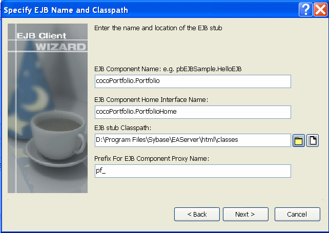
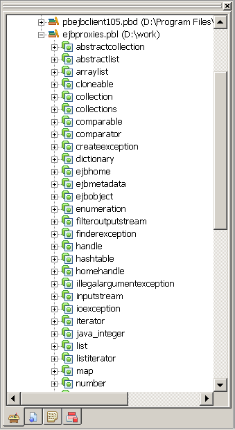

To generate EJB proxy objects, you need to create an EJB Client Proxy project. You can do this in the Project painter or with a wizard.
To create a new EJB Client Proxy project, select either of the following from the Projects page of the New dialog box:
The EJB Client Proxy icon opens the Project painter for EJB proxies so you can create a project, specify options, and build the proxy library.
 To create an EJB Client Proxy project in the Project
painter:
To create an EJB Client Proxy project in the Project
painter:
Double-click the EJB Client Proxy icon on the Projects page of the New dialog box.
To specify the EJB, select Edit>Select Objects and enter the fully qualified name of the component's remote interface in the text box, for example com.sybase.jaguar.sample.svu.SVULogin or portfolio.MarketMaker.
Enter the path of the directory or JAR file that contains the EJB's stubs in the Classpath box and click OK.
If the stub files are in a directory and the fully qualified name of the EJB is packagename.beanname, enter the directory that contains packagename.
To specify the PBL where the proxy objects should be stored, select Edit>Properties and browse to the location of a library in the target's library list.
You can specify an optional prefix that is added to the beginning of each generated proxy name. Adding a prefix makes it easier to identify the proxies associated with a specific EJB and can be used to avoid conflicts between class names and PowerBuilder reserved words. The prefix is not added to the name of proxies that are not specific to this EJB, such as the proxies for exceptions, stream objects, and ejbhome, ejbobject, ejbmetadata, handle, and homehandle.
Close the dialog box and select File>Save to save the project.
The new project lists the EJB component for which a proxy will be generated and specifies the name of the output library that will contain the generated proxy objects.
The EJB Client Proxy Wizard helps you create the project.
 To create an EJB Client Proxy project using the
wizard:
To create an EJB Client Proxy project using the
wizard:
Double-click the EJB Client Proxy Wizard icon on the Projects page of the New dialog box and click Next on the first page of the wizard.
Select a library in which to store the project object and click Next.
Specify a name and optional description for the project and click Next.
As shown, enter the fully qualified name of the component's remote interface in the text box, for example cocoPortfolio.Portfolio:

The component's home interface name is entered automatically using the standard naming convention, although the wizard lets you modify this name if necessary.
Browse to select the JAR file that contains the EJB's stubs or the directory that contains the stub package.
If the stub files are in a directory and the fully qualified name of the EJB is packagename.beanname, enter the directory that contains packagename.
Specify an optional prefix that is added to the beginning of each generated proxy name and click Next.
Adding a prefix makes it easier to identify the proxies associated with a specific EJB and can be used to avoid conflicts between class names and PowerBuilder reserved words. The prefix is not added to the name of proxies that are not specific to this EJB, such as the proxies for exceptions, supporting classes, and EJBHome, EJBObject, EJBMetaData, Handle, and HomeHandle.
Browse to select an existing library and click Next and Finish.
The proxy objects are generated and stored in this library, which must be added to the target's library list.
After the wizard has created the project, you can use the Project painter to modify your project settings.
Whether you create the EJB Proxy project using the wizard or the painter, the final step is to build the proxy objects. To do so, click the Build icon on the painter bar or select Design>Deploy Project from the menu bar.
 Proxy generation requires javap.exe PowerBuilder uses the javap.exe utility
to generate proxy objects. This executable must be in your system
path. By default, EJB client development uses the Sun JDK 1.4 installed
with PowerBuilder. The path and classpath required by the Java VM
are added to the path and classpath used in the current session
automatically.
Proxy generation requires javap.exe PowerBuilder uses the javap.exe utility
to generate proxy objects. This executable must be in your system
path. By default, EJB client development uses the Sun JDK 1.4 installed
with PowerBuilder. The path and classpath required by the Java VM
are added to the path and classpath used in the current session
automatically.
In addition to the proxies for the home and remote interfaces of the EJB, proxies are also generated for any Java classes referenced by the EJB, for ancestor classes, for any exceptions that can be thrown by the EJB and its supporting classes, and for the following interfaces:
For more information about these interfaces, see the documentation for the javax.ejb package .
The project also generates a structure that stores the mapping of Java classes to proxy names. This structure is used internally and should not be modified.
You can also use the ejb2pb105 command-line tool to generate proxies. The tool generates:
These files are generated in the directory in which you invoke the command. The syntax is:
ejb2pb105 [ -classpath pathlist ] EJBName [EJBHomeName][ prefix ]
If the pathlist argument contains spaces, for example D:\Program Files, the pathlist must be enclosed in quotes. EJBName is the fully qualified remote interface class name. If you use the standard naming convention for the home interface, then including an argument for the fully qualified home interface name, EJBHomeName, is optional. If you specify the optional prefix, it is added to the beginning of the generated proxy name.
For example, the following statements generate proxies for the Portfolio class in the package cocoPortfolio on EAServer. The proxies for the home and remote interfaces of the Portfolio class have the prefix pf_, and the generated files are written to the directory D:\work\proxies:
cd D:\work\proxies
ejb2pb105 -classpath "D:\Program Files\Sybase\EAServer\html\classes" cocoPortfolio.Portfolio pf_
The home and remote classes for the EJB and any dependent classes must be in the class path that you specify.
After generating the proxies, you import them into your target by selecting the library that contains the client, selecting Import from its pop-up menu, and selecting the .srx files from the dialog box that displays. The order in which you import .srx files is significant—you cannot import proxies that depend on other classes until you have imported the proxies for the dependent classes.
The generated proxies display in the System Tree. You can expand the proxy nodes to display the signatures of the methods on the home and remote interfaces for the EJB component, as well as on all the other objects for which proxies were generated.

If the name of a component method conflicts with a PowerBuilder reserved word, the string _j is appended to the method name in the proxy so that the methods can be imported into PowerBuilder. For example, the Java Iterator class has a Next method, which conflicts with the PowerBuilder reserved word NEXT. In the proxy, the method is named next_j.
The EJB Proxy generator maps datatypes between Java and PowerBuilder as shown in the following table:
A PowerBuilder double has 15 digits of precision (1.79769313486231E+308) and a Java double has 17 digits (1.7976931348623157e+308). For EJB client applications, the precision of a double is limited to the PowerBuilder range (2.2250738585073E-308 to 1.79769313486231E+308).
Unlike Java, PowerBuilder does not support unbounded multidimensional arrays. If a Java method takes an array of arrays as a parameter, the corresponding PowerBuilder proxy method takes a parameter of type Any. To call the method in PowerBuilder, declare a PowerBuilder array with the same dimensions as the Java array, and pass the array as the parameter.